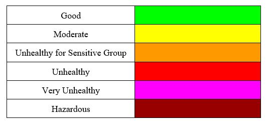
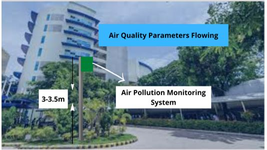
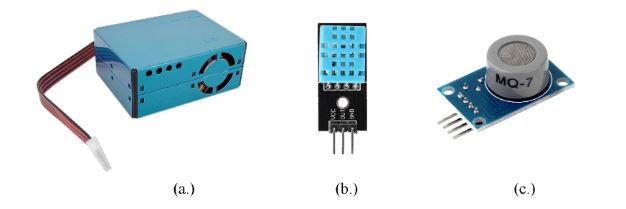

Design flowchart of the System
The experimental research design will be used in the development of the system. The process implies a systematic and sequential approach as the researcher attempts to develop a prototype design of Air Pollution Monitoring System where it is involved in detecting and collecting air quality in the environment.
APM Color-coded Index
The approach used in the collected measurement of CO and PM2.5 that will be analyzed
using the values of air pollutant concentration, and was converted into a specific index color-coded rank.

Air Pollution Monitoring Ecosystem
Air flows dynamically together with its pollutants in the environment.
Establishing an air quality monitoring system can be enhanced in choosing a certain location for the system.
In order to deploy air quality monitors, the APMs site selection procedure aims to collect information
that will aid in making wise judgments. Sensor height assesses the crucial role of obtaining APM's data,
the actual air quality positioned at a higher level.

Sensors
Every sensor gives different data. They are therefore configured in response to the read data.
(a). Particulate Matter (PM2.5) Sensor Experiment
(b). Humidity and Temperature Sensor Experiment
(c). Carbon Monoxide Sensor Experiment

(a). Particulate Matter (PM2.5) Sensor Experiment
(b). Humidity and Temperature Sensor Experiment
(c). Carbon Monoxide Sensor Experiment